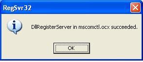

Run time Error 713ऐसा मेरे साथ कई बार हुआ है जब किसी कारण से मुझसे विन्डो इन्स्टाल ना हुआ हो या किसी सोफ्टवेयर को अनइंस्टाल करते समय जिन फाइलों को मुझे बचा कर रखनी चाहिये; की जगह मैने रिमूव आल कर दी हो।
"Class not registered"
"You need the following file to be intalled on your machine: MSSTDFMT.DLL"
यह परेशानी कई बार अलग अलग प्रोग्राम को चलाते समय आती है, बस फाइल के नाम बदल जाते हैं जैसे: MSCOMCTL.OCX, MFC42.DLL आदि। ऐसा उपरोक्त फाईल की रजिस्ट्री में गड़बड़ होने पर भी होता है।
इस एरर से मुक्ति पाने का तरीका है कि उक्त फाईल को अपने सिस्टम पर इंस्टाल कर दी जाये, परन्तु इन फाईलों को डबल क्लिक कर जैसे हम दूसरे सोफ्टवेर इन्स्टाल करते हैं इन्हें नहीं कर सकते। इन्हें इंस्टाल करने का तरीका थोड़ा अलग है।
आईये इसका सही तरीका बताते हैं।
- सबसे पहले आपको जो फाइल चाहिये उस फाइल को गूगल में सर्च कर डेस्कटॉप पर डाउनलोड कर लें, और अबइसे कॉपी करें।
- अब आप C:\windows\system32 में जाकर इसे पेस्ट कर दें।अब Start-Run में जाकर यह टाइप करें regsvr32 MSCOMCTL।OCX
- regsvr32 के बाद एक स्पेस जरूर दें!
- जहाँ MSCOMCTL.OCX इस जगह आप उस फाईल का नाम टाइप करें जिसे आपने अभी अभी C:\windows\system32 में पेस्ट किया है।

आपको संदेश मिलेगा "DllRegisterServer ... succeeded"बस आपका काम हो चुका है। अब एक बार सिस्टम को रिस्टार्ट करें, और अब देख लें आपका को प्रोग्राम पहले नहीं चल रहा था अब चलने लगा है।